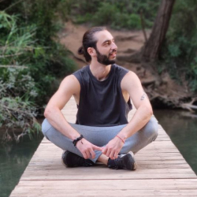

Eduard Dotsenko. Project 1
Graphic | WEB | UX Designer

Work Experience
WEB / Graphic Designer
3dids.com Business consultancy specialized in digital transformation
- Collaborated with the marketing department to produce creatives for e-commerce clients.
- Constructed landing pages using Elementor and Wordpress.
- Edited video advertisements from raw source materials.
UX Designer
CiRealty - Canadian Real Estate Agency
- Collaborating closely with project managers and cross-functional teams to ensure seamless delivery of the final product to clients.
- Crafting consistent customer journey maps and engineering comprehensive sitemaps for wireframes and prototypes.
- Collaborating with QA experts to refine and achieve the end product.
Graphic Designer
3dids.com Business consultancy specialized in digital transformation
- Experienced in executing campaigns for diverse businesses.
- Collaborated seamlessly with design teams to ensure timely project completion
- Created over 500+ Newsletters.
- Achieved strong CTR results.
Education
CEI Escuela de Diseño y Marketing
UI/UX Design · Usability · Design Thinking · Web Design
COCO School
Digital Marketing and Web Design · SEO · SMM · Relative Design
COCO School
Master in Graphic Design · Visual Language · Color theory · Graphic Synthesis · Visual Communication & Visual Perception
IT-Step
Degree in Graphic Design